Guide d'utilisation VOLCAN
Volcan est une application web permettant de dématérialiser les échanges entre le SMPRR et ses différents interlocuteurs. Pour y accéder, il suffit de cliquer ici, ou de taper dans la barre de recherche de votre navigateur l’adresse suivante : http://volcan.smprr.fr/.
1. Se connecter
Pour vous connecter au site web, vous devez disposer de votre identifiant et de votre mot de passe. Il vous a été transmis par l'unité informatique du SMPRR. Si ce n’est pas le cas, n’hésitez pas à les contacter : samuel.cochard@cr-reunion.fr ou sebastien.grondin@cr-reunion.fr.
Lorsque cous accèderez à l'application web "Volcan", vous serez dirigé vers cette page :

Il faudra alors entrer votre identifiant et votre mot de passe, puis cliquer sur le bouton "Valider".
2. Effectuer une demande
Une fois connecté(e), vous accèderez à cette page:

C’est à partir de cette page que vous pourrez effectuer vos demandes en fonction de vos besoins. Cliquez simplement sur l’activité concernée par votre demande.
Une fois que vous aurez sélectionné l'activté de votre choix, vous serez redirigé vers une page appelée le « cockpit ». Cette page recense toutes les demandes adressées au SMPRR par ses interlocuteurs en fonction de l'activité sélectionnée.
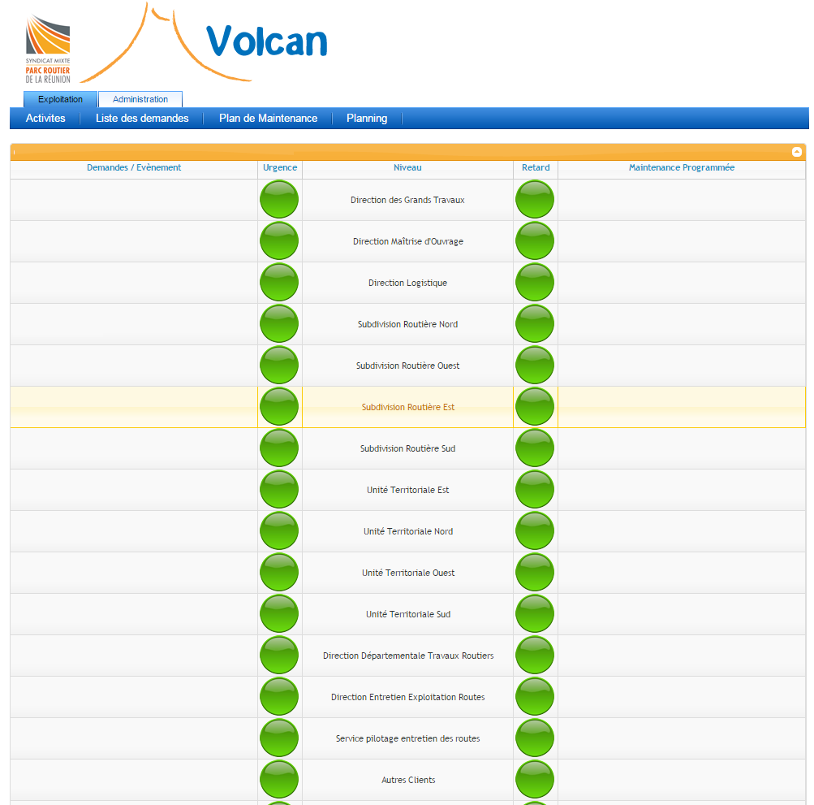
Ici, tous les clients sont visibles puisque je suis connecté sur mon compte d’administrateur. Mais lorsque vous accèderez à cette page, vous ne verrez que les demandes émanant de votre service.
Les demandes effectuées et en attente de traitement par le SMPRR figureront dans la colonne de gauche « Demandes/Evènements ». Dans la colonne de droite figureront les « Maintenances Programmées ».
Pour effectuer une demande, faites un clic droit sur le nom de votre service, puis cliquer sur « Nouvelle Demande », comme indiqué sur l’image qui suit :
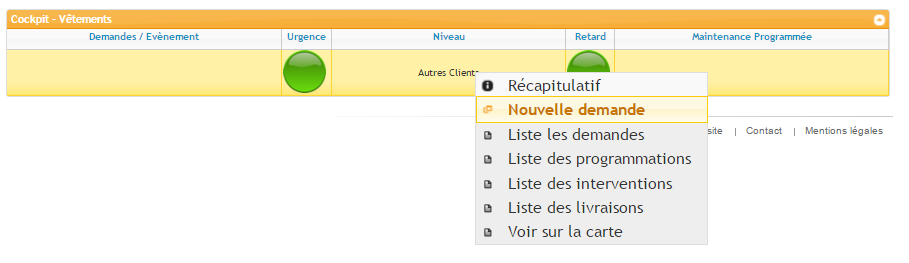
Vous serez dirigé vers cette page :
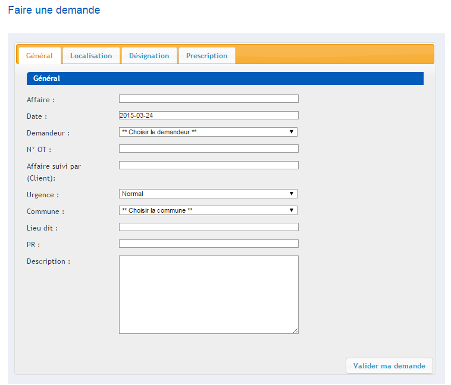
Il vous suffira maintenant de remplir un maximum de champs dans les 4 onglets (Général, Localisation, Désignation, Prescription) en étant le plus précis possible, puis de valider votre demande en cliquant sur le bouton « Valider ma demande ».
Votre demande est maintenant présente dans la « Listes des demandes » et fera l’objet d’une proposition de devis par le SMPRR.
** Notez que vous avez la possibilité de joindre une photo à votre demande : **
Une fois de retour dans la « Liste de demandes », rendez-vous sur votre demande nouvellement créée. Votre demande s’affichera, et un menu à gauche de la page vous permettra notamment de joindre une photo à votre demande.
Cliquez sur « Ajouter une photo ».
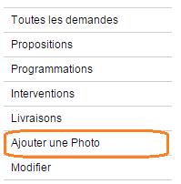
Un formulaire d’ajout s’ouvrira, cliquez sur « Choisissez un fichier », une fenêtre s’ouvrira et vous permettra de parcourir les fichiers de votre ordinateur. Rendez-vous à l’emplacement de votre photo, double-cliquez sur la photo, et enfin cliquez sur « Ajouter ».
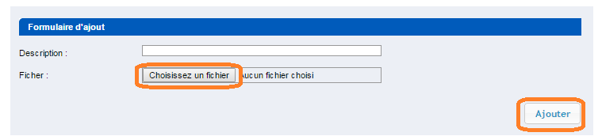
Il est possible d’ajouter plusieurs photos en cliquant à nouveau sur « Ajouter une photo »
3. Les liste des demandes
La « Liste des demandes » est une page accessible via ce bouton dans la barre de navigation :
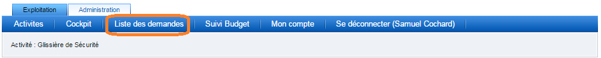
Cette liste rassemble l’ensemble des demandes de votre service concernant une activité particulière. Ici par exemple, en cliquant sur « Liste des demandes », vous serez dirigez vers la liste de toutes les demandes de votre service concernant l’activité « Glissière de Sécurité ».
On retrouve à gauche de la liste un menu de recherche ainsi qu’une légende (voir annexe 1). Le menu de recherche vous permettra de retrouver facilement une demande grâce à son N° de demande.
Dans cette liste, les demandes sont classées sous forme de tableaux avec 8 colonnes
(voir fig. 8):
- « N° » : C’est un identifiant unique qui est attribué automatiquement par Volcan lors de la création d’une demande. Il permet de retrouver facilement une demande en utilisant le champ de recherche figurant dans le menu de recherche (voir annexe 1)
- « Etat » : Cette colonne contient un pictogramme permettant de savoir en temps réel l’état de lequel se trouve la demande. Une légende est présente sur la gauche de la page (voir annexe 1)
- « Urg. » : Cette colonne contient un pictogramme renseignant l’urgence de la demande. Une légende est présente sur la gauche de la page (voir annexe 1)
- « Date » : La date à laquelle la demande a été créée. Cette information est renseignée automatiquement par Volcan
- « Nom » : L’intitulé de la demande. Cette information est renseignée par la demande lors de la création de la demande
- « Nœud » : Cette information complète la colonne « Nom » et permet de mieux situer la demande
- « Propositions » : C’est ici que figureront la/les proposition(s) de devis faites par le SMPRR. Elles sont identifiées par un « n° de propositions » attribué automatiquement par Volcan. Juste à côté du n° de proposition figurera une petite icone renseignant l’état dans lequel se trouve la proposition. Une légende est présente sur la gauche de la page (voir annexe 1)
- « Actions » : Les différentes actions pouvant être effectuées sur la demande.
4. Visualiser et valider une proposition
Une fois la demande effectuée, le SMPRR établira une proposition de devis. Pour la visualiser et/ou la valider, il vous faudra vous rendre dans la « Liste des demandes », puis de cliquer sur « Voir » sur la ligne de la demande concernée.
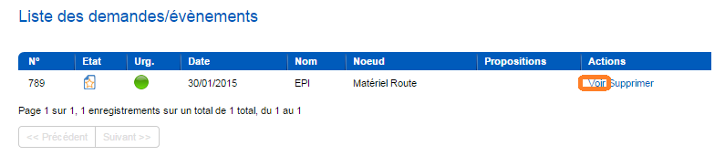
Le menu suivant s’affichera :
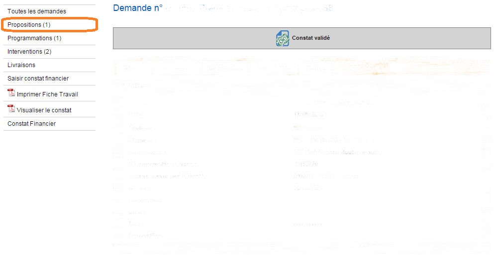
Pour avoir accès au(x) propositions, il faudra cliquer sur « Propositions ».
Vous aurez accès à la liste des propositions concernant cet évènement :
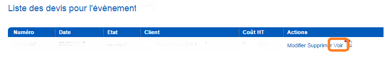
Pour voir la proposition, cliquer sur « Voir ».
Avant de pouvoir valider une proposition, elle doit être « pré-validée ». En général, c’est la personne qui a initiée la demande, qui se chargera de pré-valider la proposition. Pour pouvoir pré-valider la proposition, il faudra obligatoirement renseigner le n° Intervention Client. Tant que ce champ ne sera pas rempli, le bouton « Pré-valider » ne sera pas accessible.
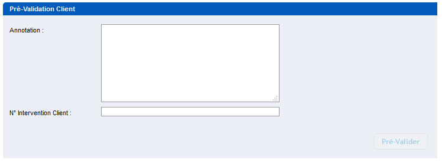
Si la proposition n’est pas conforme à votre demande et/ou ne vous convient pas, vous devez la pré-valider en mentionnant dans le champ « Annotations » que la proposition ne doit pas être acceptée. La personne chargée de valider la proposition (généralement le chef de service ou une personne qu’il aura désignée) verra alors votre annotation et aura accès au bouton « Refuser ».
Pour valider définitivement la proposition, la démarche est la même que pour la pré-validation. A la place de la partie « Pré-Validation client », vous aurez accès à l’affichage « Validation Client »
5. Visualiser et valider un constat
Une fois les travaux programmées et effectuées par le SMPRR, un constat (au format PDF) est généré. Il est visible en cliquant sur « Visualiser le constat » :
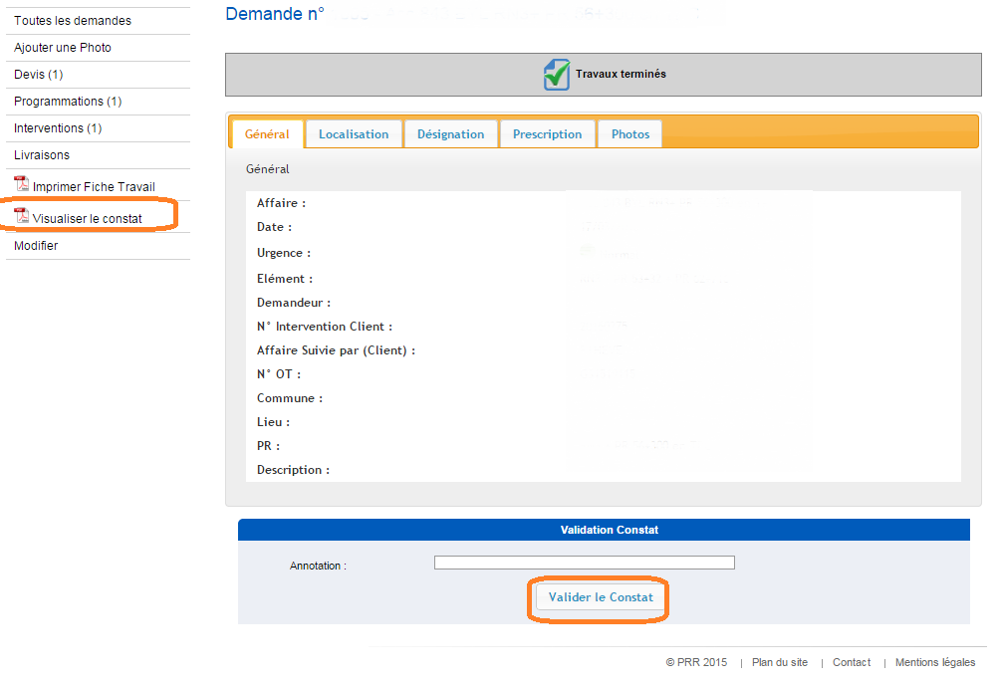